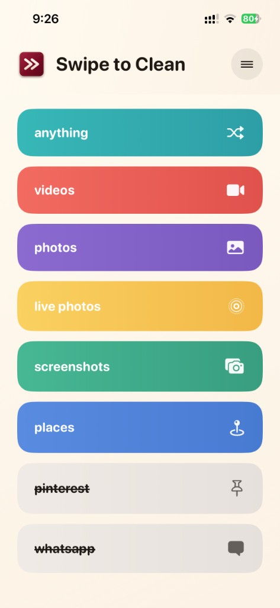
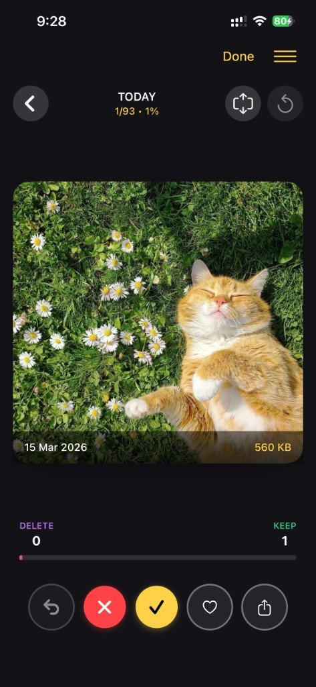
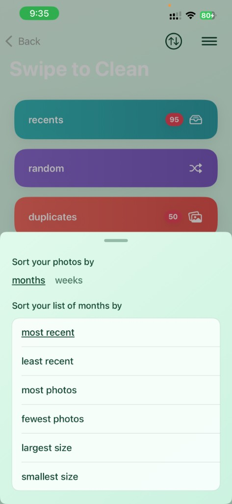
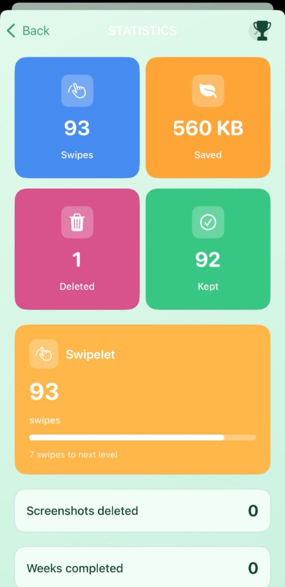
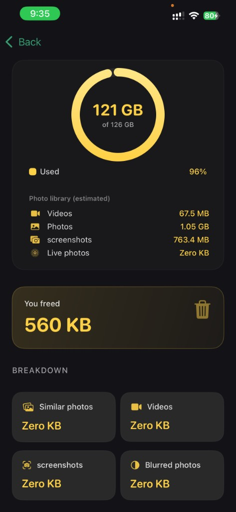
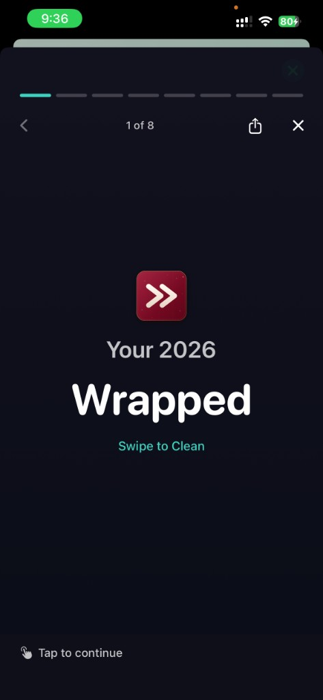
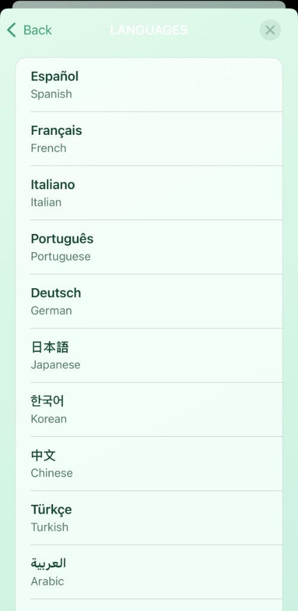

Swipe to Clean
Clean your camera roll in minutes
Swipe right to keep, left to delete. All on your device.
Browse your photos by month or category. Swipe right to keep, left to delete. Everything stays on your device—nothing is uploaded. Reclaim your photo library the simple way.
Download on the App StoreFree to try. Premium for unlimited cleaning.
See the app in action
Swipe to Clean is a photo manager that helps you declutter your camera roll. Pick a category, go through your photos one by one, and swipe or tap to keep or delete. Here’s what you’ll see inside the app.







How it works
-
Swipe to decide — Go through photos one by one. Swipe right to keep, left to delete. No menus, no taps—just swipe.
-
Browse by month — Jump to any month and clean in order. Perfect for tackling old backups or recent shoots.
-
By category — View Screenshots, Selfies, Live Photos, or other types. Delete what you don’t need, keep what matters.
-
Recently Deleted — Restore photos you changed your mind about, or clear them for good. You stay in control.
Private & on your device
Your photos never leave your iPhone. All browsing and swiping happens locally. We don’t upload, store, or see your pictures. No cloud processing—just your device.
- 100% on-device processing
- No photo uploads or cloud storage
- Works with your existing Photo Library
Ready to clean?
Download Swipe to Clean from the App Store and start decluttering your camera roll today.
Download on the App Store